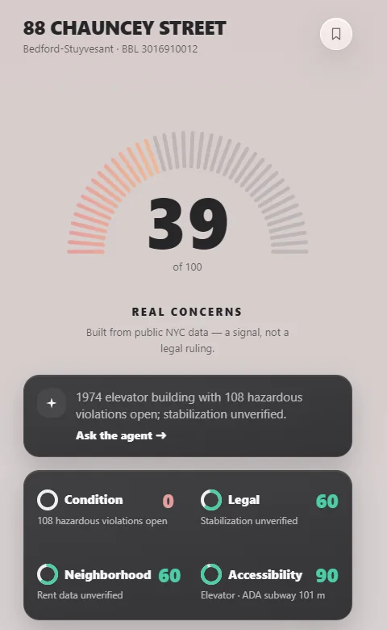

Self-taught software engineer and AI builder, Rust-first with a C, C++, and Assembly foundation. I build systems whose guarantees can be checked: Ed25519-signed, hash-chained exports a stranger can verify offline, an on-device Whisper dictation app where audio never leaves the machine, a ~25k-line native-Rust terminal with 132 passing tests, and the Postgres backend for a nonprofit client's gala.
01 · About
The rare combination
I taught myself C, C++, and Assembly in my late teens. Installed Debian Linux on a PlayStation 3 with a custom Wi-Fi driver because I wanted to know if I could — chipset documentation, low-level debugging, hardware constraints. Followed that with formal Aircraft Mechanic A&P coursework at Vaughn College — methodical troubleshooting, risk awareness, precision under pressure. I had to pause that degree during a family emergency, but the habits remain.
I'm now in the inaugural cohort of Pursuit's AI-Native Builder program in Long Island City, NY — a 600+ hour, in-person, 7-month intensive shipping production-grade AI products end-to-end. Per Scholas IT Support graduate (October 2025): CompTIA A+, Google IT Support Professional Certificate, ServiceNow ITSM Fundamentals. I have repaired airplanes, rehabilitated end-of-life desktops as network servers, and built PCs since I was a teenager.
Before Pursuit I sub-contracted at Architechne as Data Analyst and Partnership Coordinator (Sep 2025 – Mar 2026), building a Python + AI scraper that cut my own manual research workflow by ~50%. Before that I ran a 2.5-year Airbnb business solo (2017–2020) — listing, marketing, bookkeeping, vendor coordination, guest relations. Same end-to-end ownership discipline I bring to software systems today.
02 · Projects
Selected · 2025 → 2026
Rust · Cryptographic integrity · Live
A Building Health Card for NYC apartments, scored from public city data, with an export a stranger can verify offline, without trusting me or reaching my servers. Each export carries an append-only SHA-256 hash chain with an Ed25519-signed head, and verification has three outcomes, not two: signed and intact, intact but unsigned, tampered.
While verifying it in production, I wrote an independent verifier in Python and found a forgery path: a rewritten chain, re-signed with the forger's own key, verified as intact. The fix was publishing the signing key at a stable endpoint, so a reader has something to compare against.
Rust · axum · Ed25519 · SHA-256 hash chain · TypeScript · Fly.io · Vercel
Frontend contributions from Antonin Lesov
live demo → · repository → · how the export works →
Team of 4 · Client capstone · Demo Day Nov 10, 2026
A nonprofit's annual gala ran on four disconnected sources: ticket sales, sponsorship pledges paid by check, comp tickets tracked by individual staff, and a shared spreadsheet. Guest names were retyped from sponsor emails and badges were mail-merged by hand. Our Pursuit L3 capstone replaces that with one guest list: a staff app, a private sponsor portal in four languages, and an iPad check-in app that keeps working offline.
My part: backend lead and repo admin.
React · TypeScript · Vite · Tailwind · Supabase (Postgres, Auth, Edge Functions) · row-level security · Cloudflare Pages + Access · Vitest · Playwright · built with Claude Code
With Natalie Walker (product lead · UI/UX) · Cornell Robertson (backend) · Antonin Lesov (frontend · UI/UX)
private repository · working prototype on invented data · numbers as of Oct 2026Team · Client pitch · Shipped
Features built into Excalidraw's open-source codebase for a Head of Product client, aimed at one KPI: new users who save their first drawing. I built and shipped both approved features — a one-time save prompt, and a persistent “Save to file” button with a format picker — plus the CI pipeline and a live demo that switches between control and treatment arms. Every color pair measured to WCAG AA.
TypeScript · React · Vite · Vitest · GitHub Actions
With Jillian Krebsbach · Lawrence Carrillo · Cornell Robertson
live demo → · repository →Lead · Multi-Agent AI
Scores your natal chart against the chart of anything with a date of origin (v1: stocks, by IPO). Two visible agents split measurement from meaning — Hamun-ana computes exact aspects from real ephemeris, Ungasaga reads them back. Reflection, not advice.
Rust · Dioxus · axum · Postgres · MCP · ANISE/JPL ephemeris
repository →Applied AI · Voice & Systems
Privacy-first desktop dictation app: live streaming transcription plus file and YouTube import, all on-device via whisper.cpp — no cloud STT, no accounts. Real-time mic → VAD → Whisper pipeline, four GPU backends (CUDA/Vulkan/Metal/CPU), and an Ed25519-signed freemium tier. Co-built on a PRD/HEART process; shipped to v0.2.0-beta.29.
Rust · Tauri 2 · whisper.cpp · cpal · React/TS · CUDA/Vulkan/Metal
repository →Rust · Tamper-evident
An offline-first, voice-driven compliance logger for construction sites. Every entry's hash includes the one before it, so editing any historical record breaks every hash after it, and anyone holding the file can detect tampering, not only whoever runs the server. Network egress is cut to an explicit allowlist. HouseCheck's export grew out of this design.
Rust · cross-platform desktop · 3-OS CI matrix · 18 commands, zero stubs
Grew from a Whisper Notes clone built with Jimmy Ong
repository → · build from source; no signed installer yetMore builds
All four Pursuit L2 builds, with workflow videos and measured numbers: pursuit-l2-portfolio →
03 · Founder
Nisaba Capital Charting
A desktop terminal that pairs conventional market data — 12 APIs, 10 native Rust scrapers, 46 SQLx migrations, and an axum REST sidecar — with a Hellenistic astrology engine validated to sub-arcsecond precision against Swiss Ephemeris and JPL ephemeris data. Built solo and presented at Pursuit Demo Day.
The thesis isn't that astrology predicts markets. It's that strong investors don't dismiss a data source just because it's unconventional — they measure it. Pre-revenue; entity formation and IP filings in progress.
Rust · Iced · axum · SQLx · Swiss Ephemeris · WGSL shaders
Visit the Nisaba brand site →04 · Experience
Owner-operator · 2017 → present
Gala guest list, private sponsor portal, and offline-first iPad check-in for a nonprofit, on a team of four. Led the Postgres backend (row-level security for three staff roles, an append-only change log, hashed single-purpose tokens) and authored 150 of the team's 189 merged pull requests. Demo Day: November 10, 2026.
Solo-built native-Rust financial intelligence platform. ~25k LOC, 132 tests, zero warnings, Windows installer (v12.2.0). Demoed at Pursuit Demo Day (2026-05-06) to Pursuit staff, fellow Builders, and a Fortune 500 industry reviewer. Pre-revenue; legal entity formation and IP filings in progress.
Built Python + AI scraper for luxury-design partner lead-gen. Designed MySQL territory database. Cut manual research workflow by ~50%.
Ran a full short-term rental business solo for 2.5+ years. Bookkeeping, marketing, vendor coordination, guest relations. Same end-to-end ownership discipline I bring to software systems today.
05 · Education
Pursuit · Per Scholas · Vaughn
Inaugural cohort. 600+ hour, in-person, 7-month intensive shipping production-grade AI products end-to-end. Presented Nisaba at Demo Day in May 2026 to Pursuit staff and a Fortune 500 industry reviewer; the L3 client capstone presents on November 10, 2026.
CompTIA A+ · Google IT Support Professional Certificate · ServiceNow ITSM Fundamentals. Hardware, networking, and enterprise ITSM workflows.
Aircraft Mechanic Airframe & Powerplant. All technical coursework toward the FAA A&P Rating Certification completed.
06 · Stack
Languages · Systems · Operations
Rust (axum, SQLx, Tauri 2, Dioxus, Iced), Python, C, C++, Assembly, TypeScript/React, HTML/CSS, SQL (PostgreSQL, MySQL), REST + LLM APIs, WGSL shaders.
Ed25519 signatures, SHA-256 hash chains, Postgres row-level security, hashed bearer tokens, gitleaks secret scanning, SSRF hardening, egress allowlists.
Claude Code, Cursor, Anthropic + OpenAI APIs, MCP, whisper.cpp, RAG, agentic workflows, Swiss Ephemeris.
Linux, Windows, GitHub administration (branch protection, CI), Supabase, Cloudflare Pages + Access, Fly.io, Linux device drivers, hardware bring-up, EOL system rehab, schematics reading.
CompTIA A+, Google IT Support, ServiceNow ITSM, LAN/WLAN/WAN networking, project & financial management, customer relations.
07 · Documents
PDF or editable
08 · Contact
Open to opportunities